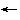

Programming in C
 ANSI
History
Culture
Literature
What's new?
ANSI
History
Culture
Literature
What's new?
ANSI C
- ISO/IEC JTC1/SC22/WG14 and N843, the official committee document
The first chain of abbreviations is the committee responsible for
maintaining and updating the C language definition; the second, N843, designates
the Final Committee Draft of next C standard.
As usual, there are versions in
gzipped PostScript
and
Adobe
Acrobat format.
Gábor Egressy is hosting a hyperlinked version of N794, a slightly earlier draft.
- A brief description of Normative Addendum 1,
by Clive Feather
Rather than delay the Standard to add full internationalization features,
ANSI agreed to add minimal features immediately, with ISO designing
a proper extension at a later date. This work
- 4 years in the doing - has culminated in Normative Addendum 1.
- Normative Changes to ISO/IEC 9899:1990
in Technical Corrigendum 1
Four years after the adoption of the ANSI C standard as
an International Standard in 1990, answers to the first batch of
defect reports have been formally accepted: the C standard has changed.
- Paul Eggert summarizes Technical Corrigendum 2
ISO C Technical Corrigendum 2 (TC2) has been approved.
Even leaner than its predecessor TC1, it
consists only of small changes in response to Defect Reports,
and will be of interest mostly to compiler and test suite vendors.
- Instant C9x: Doug Gwyn's Q8
``Aside: Why "Q8"? That was used as a system external symbol
prefix in old CDC Fortran implementations, to avoid link-time
name-space collisions with user-defined symbols, on the
assumption that no user would ever think of using such a name.''
- David M. Keaton's home page
and FTP site (Danish mirror)
First the official X3J11.1 (NCEG subgroup) server, then
the official ANSI X3J11 server,
David M. Keaton's FTP site
has now become the official ISO SC22 WG14 archive; it holds
electronic copies of all current proposals
for C9X,
the next revision of the ISO C standard. Lately,
Dave has been venturing out onto the WorldWide Web and has marked
up two proposals he wrote with David Prosser:
Designated Initializers
and Compound Literals.
- The Dinkum C Library Reference
P.J. Plauger, author of many books on C and software engineering
and until recently convener of the ISO/IEC workgroup in charge
of C as an international standard, is licensing HTML versions
of some of his books, among them the Standard C library reference.
- The ANSI C Rationale
``This Rationale summarizes the deliberations of X3J11, the Technical Committee
charged by ANSI with devising a standard for the C programming language.''
- Dennis Ritchie on
type qualifiers (1988)
``Noalias must go. This is nonnegotiable.
It must not be reworded, reformulated or reinvented.''
- Proposal X3J11.1 93006: Restricted Pointers
``The X3J11 committee attempted to solve the aliasing problem in C by
introducing a new type qualifier noalias. That effort failed
because of technical problems with the proposed semantics of noalias.
This restricted pointer proposal is different in many ways.''
- Identifiers NOT To Use in C Programs, a list compiled Stan Brown
``If you want to write a portable C program, you have
to be careful not to give your own definitions to any of the
identifiers that are reserved by the C standard. The standard
tells you which identifiers are reserved, but scatters the information
through a rather thick (and expensive) book.''
- The ANSI C grammar (Yacc
and Lex)
Literature
- Clive Feather reviews "The Annotated ANSI C Standard" by Herbert Schildt
``[The] book is commenting on a very carefully designed document, and one
that has to be read precisely. If the annotator cannot get things
right, then the book is not just useless, but is a positive danger [...].''
- Harbison & Steele,
C: A Reference Manual, Third Edition (errata)
``Some or all of these problems may have been corrected in the
third and later printings of the book.'' (The current edition
is the fourth.)
- Kernighan & Ritchie, The C Programming Language, Second Edition (errata)
``Fortunately, the changes are minor; some repair our bugs,
a few account for lastminute changes in the draft standard.''
-
Stroustrup: The C++ Programming Language, Second Edition (errata)
Nonoverlapping errata for the first
printing, the first year, the
sixth printing, and from
the ninth printing on up.
-
Stroustrup: The Design
and Evolution of C++ (errata)
Errata for the first
and second
printing.
-
Summit: C Programming FAQs:
Frequently Asked Questions (errata)
Errata for the first
printing of Steve Summit's first book,
published by Addison-Wesley, 1996, ISBN 0-201-84519-9.
- Reviews of the book "Numerical Recipes In C"
``By 1995, the second edition of Numerical Recipes in C has almost completely
replaced the first edition, making it hard to judge whether the praise it has
accumulated stems from different criteria of judgement or from improvements
to the text.''
History
- Dennis Ritchie's home page
Among others:
The Development of the C Language,
a PostScript version of the 6th edition
C Reference Manual,
Ken Thompson's
Users' Reference to B,
CSTR #8: The Programming Language B, by S.C. Johnson
and Kernighan,
and even Martin Richards's
BCPL Reference Manual from 1967.
- Clive Feather gives a brief introduction to BCPL
``A cell stores a single value which can be treated as any of an integer [...],
a bit pattern, an address, a procedure designator, a floating point number,
a selector, a jump target, a jump closure, or a stream designator.''
- Alan Watson on BCPL
``BCPL was in use in Cambridge for years. Much of the software for the
Phoenix system (...) was written in BCPL (most of the rest was in assembler,
although Algol68 was used for a mailer and the infamous job scheduler --
I think there must be something in the water in Cambridge).''
-
Mark Brader on B
``B didn't believe in typechecking, period. There was only one
type, the machine word, and the programmer was responsible for applying
to a variable only such operators as made sense.''
- Brian W. Kernighan (1974):
``Programming in C: A Tutorial''
``C is a computer language available on the GCOS and UNIX operating systems
at Murray Hill and (in preliminary form) on OS/360 at Holmdel.''
-
Dennis Ritchie on the precedence of | and & vs. ==
``In retrospect it would have been better to go ahead and change the precedence
of & to higher than ==, but it seemed
safer just to split & and && without
moving & past an existing operator. (After all, we
had several hundred kilobytes of source code, and maybe 3 installations....)''
 Culture
Culture
-
The International Obfuscated C Code
Contest
``Obfuscate: tr.v. -cated, cating, -cates. 1. a. To render obscure.
b. To darken. 2. To confuse: his emotions obfuscated his judgment.
[LLat. obfuscare, to darken : ob(intensive) + Lat. fuscare,
to darken < fuscus, dark.] -obfuscation n. obfuscatory adj''
- Introductory C Programming, from Steve Summit
``If you have a copy of K&R2 and would like a
thorough treatment of the language, read K&R and the
`Notes to Accompany K&R' side by side.
If you're just getting your feet wet and would
like a somewhat simpler introduction, read the `Class Notes.' ''
- Frequently Asked Questions in comp.lang.c
``Like so many web pages, this is very much a ``work in progress.''
I would, of course, like it if it were perfect, but it's been two years
or so since I first started talking about putting this thing on the web,
and if I were to wait until all the glitches were worked out,
you might never see it.''
- Infrequently Asked Questions in comp.lang.c, by Peter Seebach
``Certain topics never (well, hardly ever) come up on this newsgroup.
They are stupid questions, to which the answers are immediately obvious,
but they would be more fun to talk about than these arcane details of
loop control.''
- Rob Pike on Style
``I eschew embedded capital letters in names; to my proseoriented eyes, they are too
awkward to read comfortably. They jangle like bad typography.''
- Tom Duff on Duff's Device
``Many people (even bwk?) have said that the worst feature of C is
that switches don't break automatically before each case label.
This code forms some sort of argument in that debate, but I'm not sure
whether it's for or against.''
- Why Pascal is Not My Favorite Programming Language, by B. W. Kernighan
``It is suitable only for small, selfcontained programs that have only
trivial interactions with their environment and that make no use of
any software written by anyone else.''
-
Henry Spencer's The Ten Commandments for C Programmers
``While thou might think that thine own ideas of brace style lead to clearer
programs, thy successors will not thank thee for it, but rather shall revile
thy works and curse thy name, and word of this might get to thy next employer.''
-
How to Use the Plan 9 C Compiler, by Rob Pike
``The language accepted by the compilers is the core ANSI C language with some
modest extensions, a greatly simplified preprocessor, a smaller library that includes
system calls and related facilities, and a completely different structure for include
files.''
-
The Alef Language Reference Manual (Postscript, 29 pages)
``Alef is a concurrent programming language designed for systems
programming. (...) Programs can be written using both shared
variable and message passing paradigms. Expressions use the
same syntax as C, but the type system is substantially different.''
-
A Descent into Limbo, by Brian Kernighan
``Limbo borrows from, among other things, C (expression syntax and
control flow), Pascal (declarations), Winterbottom's Alef (abstract
data types and channels), and Hoare's CSP and Pike's Newsqueak (processes).
Limbo is strongly typed, provides automatic garbage collection, supports
only very restricted pointers, and compiles into machine-independent
byte code for execution on a virtual machine.''
-
Other Sources...
A collection of pointers to other texts about C, related
languages, and programming languages in general on the
Internet.

Jutta Degener
Comments, corrections, suggestions:
jutta@pobox.com.